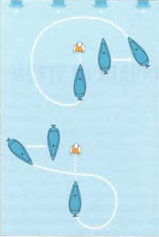
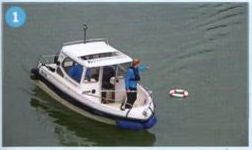
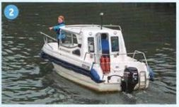
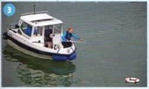
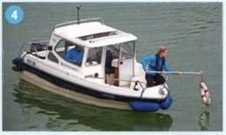

Fallt;emand sei fahrt unter Motor über Bc-d, müssen zwei Dinge sofort erfolgen: Hart-raderlage tu der Seite, an der die Person jfler Bord gegangen ist und das Auskuppeln der Schraube (Gang raus!). Das Heck dreht weg und die Verlctzungsgefatir wird vemie der Wenn das Heck frei ist. wird em Bogen geboren, der sich ,e nach Boots-/Schiffstyp nach seinem Antieb richtet Bei starrer Welle sollte stets der Radeffekt uno der da ■aus resultierende kleinere Drebkreis berücksichtigt werden, Die Person wird in der Regel muner gegen den Wind mit möglichst gennger Fahrt angesteuert km Crewmitglied beobachtet die Person und weist dem Steuermann 'aut und deutlich deren R'tntung.
Der Propeller wird beim an Bord nehmen aus-gekuopelt Möglich ist auch das Ausschalten der Zundung. wenn die Person/Boje an der Steile an Bord genommen wird, an der s ch cie Schaltung befinde: Damit soll die unkontrollierte Fahrtaufnahme des Bootes vermieden werden.
* * * *




